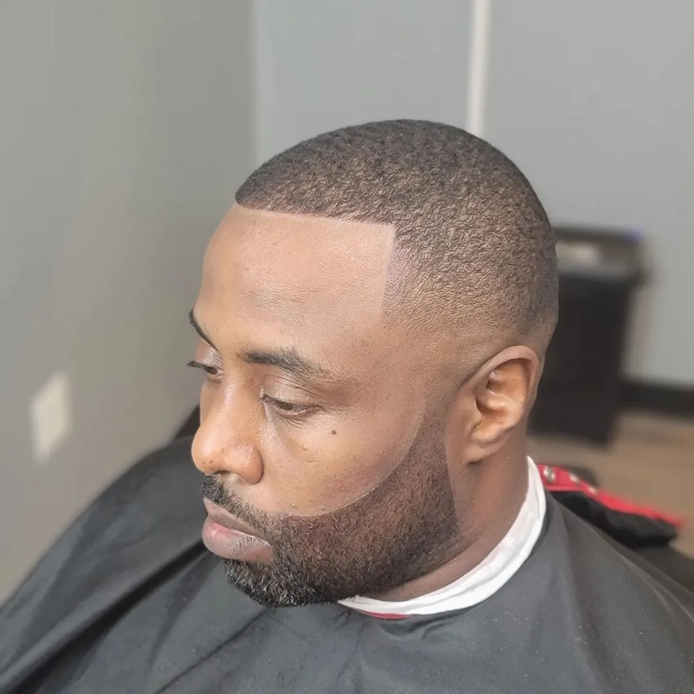
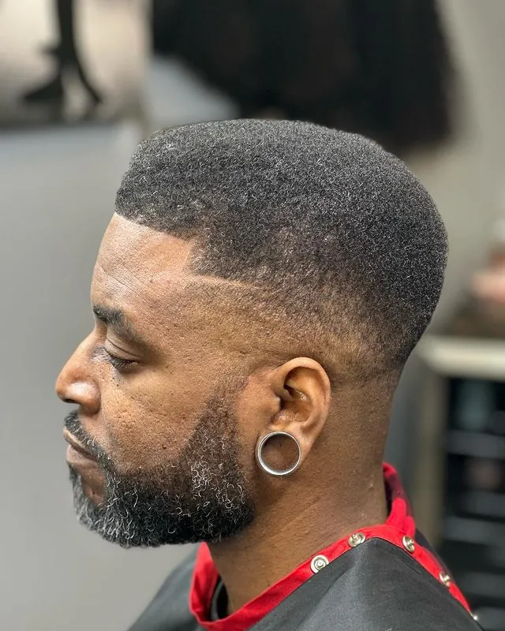
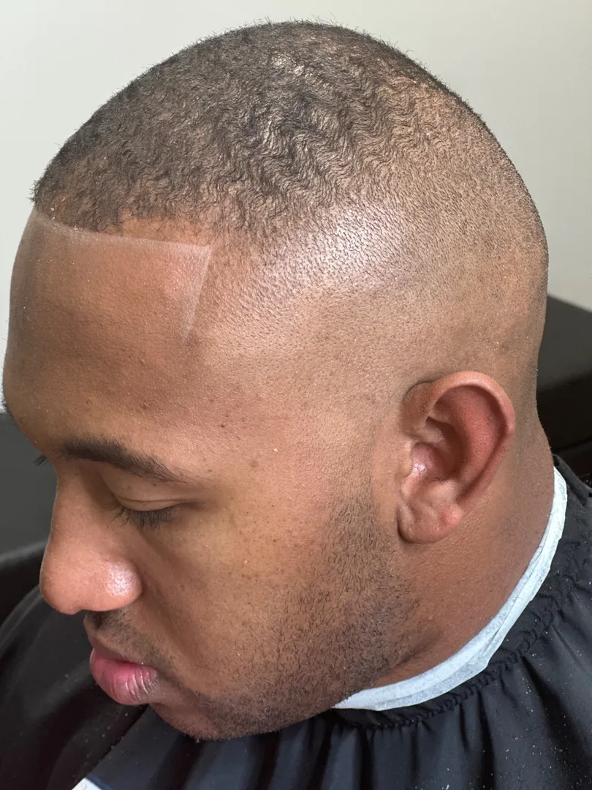

Which Fade Is Right for You? Low Fade vs. Mid Fade vs. High Fade Explained
A Master Barber's Guide to Choosing the Fade That Fits You, From My Chair in Owings Mills
The Short Answer: It's Where the Fade Begins
The difference between a low fade, a mid fade, and a high fade is where the fade begins on the head, not how short the haircut is. A low fade starts just above the ears, a mid fade begins about halfway up the side, and a high fade starts high on the head for the boldest contrast. A temple taper is different: it cleans up the temples and edges while keeping the length on the sides.
Which one is right for you comes down to your face shape, hair type, lifestyle, and profession — and that is the part I want to walk you through.
The Question I Hear Most in the Chair
One of the most common questions I hear in the barbershop is:
"What's the difference between a low fade, a mid fade, and a high fade?"
It's a fair question.
From a distance, they may look similar, but the height of the fade can completely change your appearance. The right fade can complement your face shape, match your lifestyle, and make styling your hair easier. The wrong one can leave you feeling like the haircut just doesn't fit you.
The truth is, there isn't one fade that's best for everyone.
The best fade is the one that works for you.
As a Master Barber, I don't recommend a haircut simply because it's trending. I recommend the style that fits your hair, your head shape, your profession, and how often you're willing to maintain it. If you've ever wondered what that title actually means for the cut you get, I broke it down in barber vs. master barber.
Before choosing your next haircut, here's what you should know about the most common fade styles and why understanding the difference can help you make a better decision.
What Is a Fade?
A fade is a haircut where the hair gradually transitions from very short near the neckline and around the ears to longer hair as it moves upward.
The difference between a low, mid, and high fade isn't how short the haircut is.
It's where the fade begins.
That one difference can completely change the overall appearance of your haircut. A lower fade creates a more subtle look, while a higher fade creates greater contrast and places more emphasis on the hair on top.
The Low Fade
A low fade begins just above the ears and follows the natural curve of the head.
It's one of the most conservative and timeless fade styles available.
Because the transition starts lower, more hair is left around the sides of the head, creating a softer, more natural appearance.
For many professionals, executives, business owners, and men who prefer a polished look without drawing unnecessary attention, the low fade is often the ideal choice. It's the kind of cut that quietly supports the first impression you make before you ever say a word.
A low fade may be right for you if you:
- Prefer a classic, professional appearance
- Work in a conservative business environment
- Want a haircut that grows out naturally
- Like a clean look without dramatic contrast
The low fade proves that subtle doesn't mean ordinary. When performed correctly, it delivers one of the cleanest and most refined looks a barber can create.

The Mid Fade
The mid fade begins approximately halfway between the ears and the crown of the head, creating a balanced transition between the subtle look of a low fade and the bold appearance of a high fade.
For many clients, the mid fade offers the best of both worlds. It's clean, modern, and versatile enough to complement a wide variety of hairstyles, from textured crops and curls to pompadours and longer styles on top.
Its balanced appearance makes it one of the most requested fade styles because it works well in both professional and casual settings. It's also a great choice for younger clients, which is part of why it comes up so often when I'm building a father-son haircut routine.
A mid fade may be right for you if you:
- Want a balanced, versatile haircut
- Like a modern appearance without excessive contrast
- Wear different hairstyles throughout the year
- Want a fade that fits both business and social environments

The High Fade
The high fade begins much higher on the head, creating the greatest amount of contrast between the shorter sides and the longer hair on top.
This style creates a bold, modern appearance and naturally draws attention to the hairstyle above the fade.
Because more hair is removed from the sides, a high fade typically requires more frequent maintenance to keep it looking sharp. As new growth appears, the transition becomes noticeable sooner than with a low or mid fade. It's a style where staying on a schedule matters, and it helps to understand how often you should really get a haircut.
A high fade may be right for you if you:
- Prefer a bold, modern style
- Like clean, high-contrast haircuts
- Enjoy maintaining a consistently sharp appearance
- Want your hairstyle on top to become the focal point

Fade vs. Taper: Understanding the Difference
One of the biggest misconceptions I hear in the barbershop isn't about fades—it's about tapers.
Clients often ask for a "high taper" or use the terms fade and taper interchangeably. While both techniques involve blending hair, they are not the same haircut.
A traditional taper gradually shortens the hair around the sideburns and neckline while leaving most of the hair on the sides and back relatively unchanged. The result is clean, polished, and natural.
A fade, however, continues that transition farther up the head, creating a much stronger blend and greater visual contrast.
In my approach to barbering, once that transition extends significantly higher up the sides of the head, I consider it a fade rather than a traditional taper.
Barber terminology can vary from one shop to another, which is why consultation is so important. Many clients know the look they want but may not know the technical name for it—and that's perfectly okay.
My responsibility isn't to correct terminology.
My responsibility is to understand your goal and recommend the haircut that best achieves it.
What Is a Temple Taper?
A temple taper is a more subtle grooming technique that focuses primarily on the temple area and, in many cases, the neckline.
Unlike a full fade, a temple taper preserves most of the hair on the sides while simply cleaning up the edges. The result is a neat, polished appearance that maintains a more natural profile.
Many professionals prefer a temple taper because it offers a clean appearance without the stronger contrast of a fade.
It's an excellent option for clients who want to look well-groomed while keeping their haircut conservative and easy to maintain.
Which Fade Is Right for You?
The best fade isn't determined by what's trending on social media.
It's determined by what works for you.
When I recommend a haircut, I consider several factors before making a decision.
Face Shape
Every face shape benefits from different proportions. A fade should enhance your natural features rather than compete with them.
Hair Type and Density
Straight, wavy, curly, and coarse hair all respond differently to fading techniques. The right fade should complement your hair's natural characteristics.
Lifestyle
Your daily routine matters. Some clients enjoy visiting the barbershop frequently to maintain a razor-sharp appearance, while others prefer a haircut that grows out gracefully between appointments.
Profession
A conservative workplace may call for a different look than a creative environment or athletic lifestyle. The goal is always to choose a haircut that reflects both your personality and your professional image.
Why the Consultation Matters
No two heads of hair are exactly alike.
A picture on a phone may show a style you admire, but it doesn't reveal your hair growth patterns, cowlicks, density, face shape, or maintenance routine.
That's why consultation is one of the most important parts of every service I provide.
Rather than simply recreating a photo, I evaluate your individual features and recommend the haircut that will give you the best long-term results. That unhurried, one-on-one attention is a core part of the modern barbershop experience I aim to deliver at every visit.
For first-time clients, this is one of the reasons I recommend scheduling The Tonsorial Introduction. It allows us the time to discuss your goals, evaluate your hair, and recommend the fade that best complements your features, lifestyle, and grooming routine before the haircut begins.
A great haircut starts with understanding the person wearing it.
Keeping Your Fade Looking Sharp
Even the best fade requires maintenance.
As your hair grows, the clean transition that makes a fade look sharp gradually becomes less defined.
Depending on the style you choose and how quickly your hair grows, many clients benefit from maintaining their fade every one to three weeks to preserve a consistently polished appearance. If staying on a schedule is a challenge, this is exactly where a barbershop membership earns its keep.
Many of these fades blend right into a beard, so keeping that line clean matters just as much. If you want to stretch the time between visits, it helps to know how to maintain a sharp beard between barbershop visits.
Regular maintenance isn't about vanity—it's about consistency.
When your haircut stays sharp, your confidence, personal presentation, and professional image benefit as well.
Final Thoughts
Choosing the right fade isn't about following the latest trend.
It's about selecting a haircut that complements your face shape, works with your hair type, fits your lifestyle, and supports the image you want to present every day.
Whether you prefer the subtle refinement of a low fade, the versatility of a mid fade, the bold contrast of a high fade, or the clean simplicity of a temple taper, the right haircut should feel like it was designed specifically for you.
As a Master Barber, my goal is to help every client make that decision with confidence.
Because a great haircut isn't simply about looking good when you leave the barbershop.
It's about feeling confident every day until it's time to sit back in the chair again.
Ready to Find the Right Fade?
Choosing the right fade is about more than selecting a style from a picture. It's about finding a haircut that complements your features, suits your lifestyle, and helps you present your best self every day. If you're ready to discover which fade works best for you, I'd be honored to help.
Whether it's your first visit or you're a returning client, every service at Al-Hakeem's Tonsorial begins with understanding your goals and delivering a haircut that's tailored specifically to you. Schedule your appointment today and experience the difference that personalized barbering can make. Together, we'll find the style that fits you best and keeps you looking sharp long after you leave the chair.
Book Your AppointmentFrequently Asked Questions
What is the difference between a low fade, a mid fade, and a high fade?
The difference isn't how short the haircut is, it's where the fade begins. A low fade starts just above the ears, a mid fade begins roughly halfway between the ears and the crown, and a high fade starts much higher on the head. The higher the fade begins, the greater the contrast and the more emphasis it places on the hair on top.
Which fade is best for a professional or conservative workplace?
The low fade is usually the ideal choice for a conservative or professional environment. Because the transition starts lower, more hair is left on the sides for a softer, more natural look that grows out gracefully and draws less attention while still looking clean and refined.
What is the difference between a fade and a taper?
A traditional taper gradually shortens the hair around the sideburns and neckline while leaving most of the hair on the sides and back relatively unchanged. A fade continues that transition farther up the head, creating a stronger blend and greater visual contrast. Once the blend extends significantly higher up the sides, I consider it a fade rather than a taper.
How often does a fade need to be maintained?
Depending on the style and how quickly your hair grows, many clients maintain a fade every one to three weeks to keep the transition looking sharp. Higher fades typically require more frequent maintenance because new growth becomes noticeable sooner than with a low or mid fade.
Which fade is the most popular?
The mid fade is one of the most requested styles because it strikes a balance between the subtle low fade and the bold high fade. It is clean, modern, and versatile enough to work in both professional and casual settings.
Which fade is the easiest to maintain?
A low fade or a temple taper is usually the easiest to maintain because more length is left on the sides, so the cut grows out gracefully. A high fade needs the most frequent upkeep because new growth shows sooner against the shorter, higher blend.